Начертание шрифта, служит для шрифтовых
выделений в тексте или для заголовочного
набора. Отличается большей насыщенностью
знаков.
黑胶唱片
languages
languages
languages
languages
languages
languages
Version 1.000
Copyright (c) 2016 by Sergey Ryadovoy & Jovanny
Lemonad
All rights reserved
12345
67890
 

RECORDS
RECORDS
RECORDS
SMELLS
LIKE TEEN
SPIRIT
Кобейн придумал название песни после того, как его подруга Кэтлин Ханна, в то время солистка группы Bikini Kill (одного из ведущих коллективов движения Riot grrrl), на стене дома Кобейна написала фразу «Курт пахнет Teen Spirit» (англ. «Kurt Smells Like Teen Spirit».
По словам лидера Nirvana, он сочинял Smells Like Teen Spirit, пытаясь «написать крайне попсовую песню» в духе Pixies, группы, которая ему очень нравилась. В начальном варианте она состояла из гитарного риффа и вокальной партии припева. Остальным членам группы композиция не понравилась, но Курт настоял, чтобы они над ней поработали. В результате полутора часов совместных усилий появилась финальная версия Smells Like Teen Spirit.
Load up on guns, bring your friends
It's fun to lose and to pretend
She's over bored and self assured
Oh no, I know a dirty word
Hello, hello, hello, how low
Hello, hello, hello, how low
Hello, hello, hello, how low
Hello, hello, hello
With the lights out, it's less dangerous
Here we are now, entertain us
I feel stupid and contagious
Here we are now, entertain us
A mulatto, an albino, a mosquito, my libido
Yeah, Hey,Yay
I'm worse at what I do best
And for this gift I feel blessed
Our little group has always been
And always will until the end
Hello, hello, hello, how low
Hello, hello, hello, how low
Hello, hello, hello, how low
Hello, hello, hello
With the lights out, it's less dangerous
Here we are now, entertain us
I feel stupid and contagious
Here we are now, entertain us
A mulatto, an albino, a mosquito, my libido
Yeah, hey, Yay
0
6
8
1
3
9
2
5
7
Even if you have
Even if you need
I don't mean to stare
We don't to breed
We can plant a house
We can build a tree
I don't even care
We could have all three